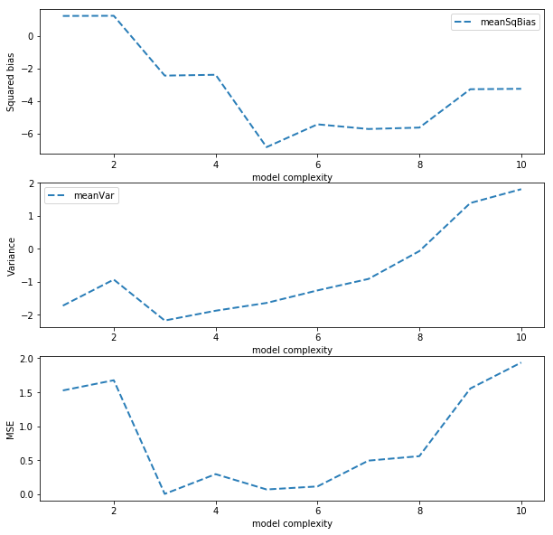
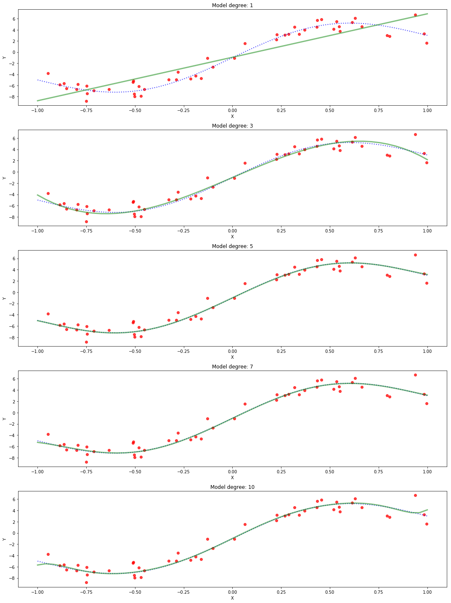
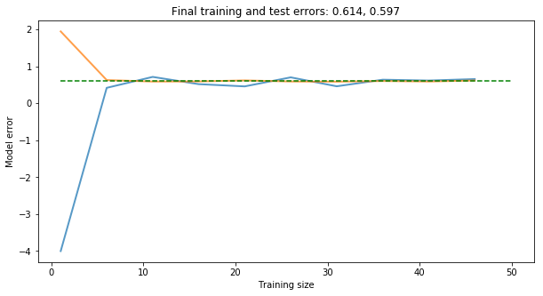
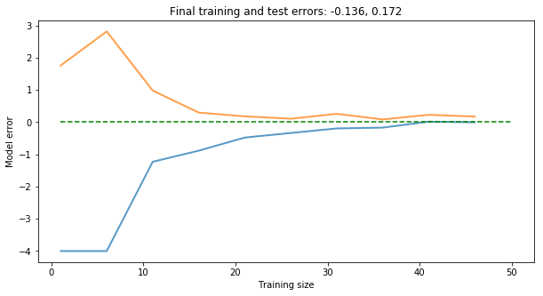

1. Introduction
After two introductory post-series (linear and logistic regression), we dive into a crucial topic that every machine-learning practitioner should be at least aware of: model selection.
Basically, we do not want our models to learn our data by heart and then to struggle to handle new unseen data samples. We want them to be great at generalizing.
We have already introduced the two key terms that we need to deal with: bias and variance. We now visualize the bias-variance dilemma, understand how the model capacity relates to its performance and why it is common practice to split the dataset into training and testing, create some learning curves that should clarify whether gathering additional data might be worthy. Every code snippet runs Python, Numpy and Scikit-learn code and the visualization parts are achieved with Matplotlib.
2. Importing the required libraries
import numpy as np
import matplotlib.pyplot as plt
%matplotlib inline
from mpl_toolkits import mplot3d
from sklearn.preprocessing import PolynomialFeatures, StandardScaler
from sklearn.linear_model import LinearRegression, LogisticRegression
from sklearn import metrics
from sklearn.model_selection import train_test_split, learning_curve, validation_curve, cross_val_score
from sklearn.pipeline import make_pipeline
from sklearn.datasets import make_circles
3. The bias-variance dilemma
Usually, the bias decreases as the model complexity, or capacity, increases, while the variance is an increasing function of the complexity. The best capacity choice is a compromise between bias and variance.
Here we create a function to get the bias, variance and MSE for a given model complexity (polynomial degree of input features) and show the trend of the two terms as a function of model complexity that usually helps to select the optimal model.
The model complexity is controlled by the variable degree that defines the polynomial degree of input features via the scikit-learn method PolynomialFeatures.
Npnts = 250 # number of points
xBase = np.linspace(0, 6, Npnts)
yTruth = groundTruth(xBase)
Nsim, Ndgr = 100, 11
errs, yExps = [], []
for degree in range(1,Ndgr):
Ys = []
for kk in range(Nsim):
xx, yy = genData()
PF = PolynomialFeatures(degree)
Xpf = PF.fit_transform(xx)
lr = LinearRegression()
lr.fit(Xpf, yy)
ypred = lr.predict(PF.fit_transform(xBase.reshape(-1,1)))
Ys.append(ypred)
estimates = np.array(Ys)
yexp = np.mean(estimates, axis=0)
sqBiases = (yexp - yTruth)**2
meanSqBias = np.mean(sqBiases)
maxSqBias = np.max(sqBiases)
variances = np.mean((estimates-yexp)**2, axis=0)
meanVar = np.mean(variances)
maxVar = np.max(variances)
mse = np.mean((yTruth + getNoise(Npnts) - yexp)**2)
mse2 = np.mean((yTruth + getNoise(Npnts) - estimates)**2)
errs.append([meanSqBias, maxSqBias, meanVar, maxVar, mse, mse2])
yExps.append(yexp)
yExps = np.array(yExps).T
errs = np.array(errs)
The figure shows the trends of the three error terms with a logarithmic scale for the sake of readability.
complexity = np.arange(1, Ndgr)
errsL = np.log(errs)
plt.figure(figsize=(10, 10))
plt.subplot(3,1,1)
plt.plot(complexity, errsL[:,:1], '--', lw=2, alpha=0.95)
plt.xlabel("model complexity")
plt.ylabel("Squared bias")
plt.legend(['meanSqBias', 'maxSqBias'])
plt.subplot(3,1,2)
plt.plot(complexity, errsL[:,2:3], '--', lw=2, alpha=0.95)
plt.xlabel("model complexity")
plt.ylabel("Variance")
plt.legend(['meanVar', 'maxVar'])
plt.subplot(3,1,3)
plt.plot(complexity, errsL[:,-1], '--', lw=2, alpha=0.95)
plt.xlabel("model complexity")
plt.ylabel("MSE")
plt.show()

The figure below illustrates the usual correlations between squared bias, variance and total error with the model complexity.
Our results somehow match these trends, but of course they are not that clean, due to the noise and randomness of the data generation process.

The figure compares the generated data with red dots, the ground-truth profile with a dashed blue line and the expected output with a dotted green line, for five different model complexity cases. The complexity is defined with the polynomial degree of the input features, which ranges from 1 to 10.
The 3 and 5 cases are a good compromise for the bias-variance tradeoff.
degrees = [1, 3, 5, 7, 10]
plt.figure(figsize=(15, 4*len(degrees)))
for kk, kdgr in enumerate(degrees):
plt.subplot(len(degrees),1, kk+1)
plt.scatter(xTrain, yTrain, c='r', alpha=0.75)
plt.plot(xTruth, yTruth, ':b', lw=2, alpha=0.75)
plt.plot(xTruth, yExps[:,kdgr-1], '-g', lw=3, alpha=0.5)
plt.title('Model degree: {}'.format(str(kdgr)))
plt.xlabel("X")
plt.ylabel("Y")
plt.tight_layout()
plt.show()

4. Model capacity
In my earlier posts, we focused on the model performance on the entire dataset. That means that we use each and every available sample to choose the model parameters. However the main challenge in machine learning is to build a model that can perform well on new unseen samples, ideally as good as on those used to train the model. This ability to keep performing well on unseen samples is referred to as generalization.
This is the reason behind the introduction of the dataset split practise in the community, namely the training and testing datasets. The model parameters are optimized with respect to the samples of the training set and its capability of generalizing is measured on different unseen samples of the testing set, where the model is used to perform its predictions with a fixed structure and parameter set of values. Here we assume that the model error on the testing set (test error) might represent the generalization error, since the testing samples are drawn from the distribution of the samples that the model should be supposed to encounter in practice.
The first critics that should come to mind is that we have control only on the model performance on the training set, while the final goal is to maximize the performance on test set. We need two assumptions to handle the data generation process:
- the examples in each dataset are independent from each other.
- training and test sets are identically distributed, drawn from the same data distribution.
That means that if you had a fixed-parameter model and two identically distributed datasets (training and testing), the model expected performance would be equal for the two sets. In practice, we first draw the training set, we choose the model parameters to reduce the training error and then draw the test samples. The expected test error is therefore greater or equal to the expected training error. The new goal to define the optimal model is to minimize the training error while reducing the gap between testing and training error as much as possible.
We introduce two crucial terms of machine learning theory:
- underfitting: it occurs when the model performance on the training set is too large. The corresponding bias of an underfit model is high.
- overfitting: it occurs when the model performance on test samples is much worse than that on training set. The variance is high.
Both an underfit and overfit models will not be able to generalize well to the test samples.
Since the “too large” and “much worse” expressions are not strictly quantifiable objectives, it is sometimes not trivial to recognise such scenarios. One idea is to understand and visualize the capacity of the model and wonder whether:
- the capacity is too low to handle the task at hand, i.e., the model is too simple. One solution to prevent underfitting would be to increase the model capacity.
- the capacity is too high that the model can memorize specific properties of the task at hand that are not present in the testing set, i.e., the model is too complex. One solution to prevent overfitting would be to reduce the model capacity.
One simple example to fully understand an overfitting model or procedure is related to students. Say there is a math student that spend several weeks to get ready for the final super-challenging calculus exam. One situation that represents the overfitting scenario is that the student builds a huge key-value table, where the key is the quiz question text and the value is the numeric outcome of the right solution. At the exam (inference step) he instead implements a “closest matching string comparison” algorithm to select the closest case from his huge table, the training set, to the test query, and returns the corresponding numeric value as his final answer to the test query. If he faces the two queries:
$$ \frac{d(x^2+2)}{dx}|_{(x=3)} $$
$$ \displaystyle{\lim_{x \to 1} (x^2+2)} $$
he will select the following two examples as the closest one:
$$ \frac{d(x^2+1)}{dx}|_{(x=3)} = 6 $$
$$ \displaystyle{\lim_{x \to 1} (x^2+1)} = 2$$
where the former is correct due to the null effect of the bias term into the derivation operator, while the latter is wrong due to the slightly different intercept of the second-order polynomial function. This strategy would however guarantee the highest mark possible, but it would very likely fail dramatically at the exam, on the test set.
A different situation of model failure (or learning approach for the student) would be that he has only focused on the limit theory while the exam is about the integral theory. The student failure is not related to the overfitting learning strategy but instead to the non-identically distributed training and test sets.
5. Learning curves
The idea behind learning curves is to identify how the learning procedure might improve by increasing the number of training instances. We start with one single training sample to build the model out of it, we test it to the fixed testing set (say 20 samples) and we record both the training and test errors. The training error results to be 0 by definition, while the test error is very likely to be huge. Step by step, we expect to have an increasing training error for increasing training samples. If they are independently drawn and uniformly distributed, it is way more challenging for the same model to “overfit” to all of them. Simultaneously, the test error would reduce since the model is learning more properties from the data distribution that help to better generalize.
The learning curves are thus the trend of the training and test errors over the axis of increasing training set size.
def learningCurves(trainSize=50, degree=1):
xTest, yTest = genData()
errs = []
for kk in range(1, trainSize, 5):
xTrain, yTrain = genData(Npnts=kk)
PF = PolynomialFeatures(degree)
lr = LinearRegression()
lr.fit(PF.fit_transform(xTrain), yTrain)
errTrain = np.mean((lr.predict(PF.fit_transform(xTrain))-yTrain)**2)
errTest = np.mean((lr.predict(PF.fit_transform(xTest))-yTest)**2)
errs.append([errTrain, errTest])
return np.array(errs)
This chart shows that it is not worthy to keep adding training data from around 10 training samples onward, because it will improve neither training nor test error. This result helps us to identify the weak link of the learning algorithm: the model structure. A relatively high value of the model training error highlights high bias in the model. Instead, almost identical error at the convergence of the training and test sets shows the model variance is very low.
trainSize = 50
errs0 = learningCurves(trainSize, 1)
errs = np.log10(errs0+1e-4)
errMeans = np.mean(errs[-5:,:], axis=0)
errMean = np.mean(errMeans)
plt.figure(figsize=(10, 5))
plt.plot(np.arange(1, trainSize, 5), errs, lw=2, alpha=0.75)
plt.plot([1, trainSize], [errMean, errMean], 'g--')
plt.title('Final training and test errors: {:.3f}, {:.3f}'.format(*errMeans))
plt.xlabel("Training size")
plt.ylabel("Model error")
plt.show()

This chart shows the same analysis for a much more complex model (the polynomial degree has been set to 10). The training error becomes somehow steady for much more samples. The test error is also very noise and greater than training error even at full training set size, which represents 75% of the entire generated dataset.
This result helps us to identify the weak link of the learning algorithm: again it is the model structure. The relatively high gap between the training and test errors for high training set size suggests a high variance in the model.
trainSize = 50
errs0 = learningCurves(trainSize, 8)
errs = np.log10(errs0+1e-4)
errMeans = np.mean(errs[-5:,:], axis=0)
errMean = np.mean(errMeans)
plt.figure(figsize=(10, 5))
plt.plot(np.arange(1, trainSize, 5), errs, lw=2, alpha=0.75)
plt.plot([1, trainSize], [errMean, errMean], 'g--')
plt.title('Final training and test errors: {:.3f}, {:.3f}'.format(*errMeans))
plt.xlabel("Training size")
plt.ylabel("Model error")
#plt.ylim([0, 100])
plt.show()
